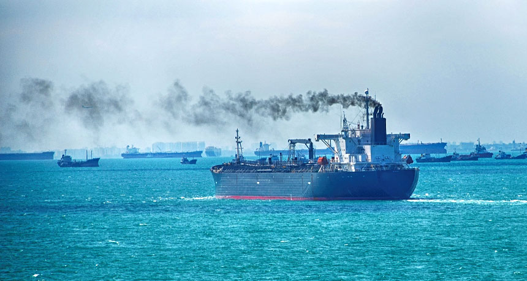

I am Anand,
Green Ship Recycling Specialist
About
I work closely with selected yards to ensure compliance of the guidelines established by the Hong Kong Convention (HKC) and European Union Ship Recycling Regulation (EUSRR) for Safe and Environmentally Sound Recycling of Ships. In addition, responsible for the development and implementation of GMS’ Responsible Ship Recycling Program.
Download CVExpertise
- Environment Social Governance (ESG)
- Health Safety and Environment
- Occupational and Environmental Risk Assessment
- Management of Hazardous Wastes
- Green Buildings/ Sustainable Development
- Circular Economy & Cleaner Technologies in Ship Recycling
- GHG Estimation & Verification
- Carbon Foot Printing of Ports
Work Experience
Global Marketing Systems (GMS)
Chief Sustainability Officer (CSO)
September 2022 - Present
ESG, Carbon Footprint, Sustainable Shipping, and ship recycling as well as regulatory compliance
Global Marketing Systems (GMS)
Head, Research & Development and Lead Coordinator of Sustainable Ship and Offshore Recycling Program (SSORP)
November 2015 - September 2022
Number of ships recycled under my supervision: 110+; Number of Inventory of Hazardous Materials (IHM) Report Developed: 100+
Teaching Experience
Indian Institute of Technology Bombay
Teaching Assistant
July 2010 - May 2014
Preventive Environmental Management, Hazardous Wastes Management, Environmental Chemistry, Industrial Wastewater Management and Reuse, Climate Change and Sustainable Development, Industrial Pollution Control and Clean Technologies, Environmental Law and Policy
Indian Institute of Technology Guwahati
M.Tech (Environmental Engineering)
July 2008 - May 2010
Physico-Chemical Treatment Processes, Air Pollution Lab
Education
Indian Institute of Technology Bombay
Ph.D (Environmental
Engineering)
April 2010
Research on Integrated Risk Assessment Framework for Development of Best Practices in Ship Recycling"
Indian Institute of Technology Guwahati
M.Tech (Environmental Engineering)
August 2008
Project on Vulnerability Assessment of Ponds in IITG Campus
Rural Engineering College
Karnataka
B.E. (Civil Engineering)
August 2004
Project on Structural Analysis of Multi-Storied Building using STAAD-Pro Software
Auditing Experience
More than 50 Man-days Auditing (domestic and international) experience as an independent verifier, Auditor and Lead Auditor for ISO 9K, 14k, 30k,45k, HKC, EUSRR guidelines and responsible steel standards.
Additional Qualifications
First Class in PG Diploma in Industrial Safety from National Institute of Labour Education and Management, (NILEM) Chennai, India
Course Director, Ship Recycling at Lloyd’s Maritime Academy London
Lead Auditor, Quality Management System (ISO 9001:2015) & Environmental Management System (ISO 14001:2015) and Occupational Health and Safety Management Systems (ISO 45001:2018) from the Indian Register Quality Systems
Indian Green Building Council Accredited Professional (IGBC-AP)
AccountAbilityAA1000: Stakeholder engagement practitioner, Sustainability Practitioner and Associate certified sustainability assurance practitioner
Consultancy Projects
Provided technical assistance and prepared scientific reports for several consultancy and sponsored projects under Prof. Shyam R. Asolekar (projects funded by various national and international agencies including European Union). Some of them are listed hereunder.
Planning Commission of India
August 2013 - April 2014
Technology Assessment for Waste to Energy Projects in India
Central Pollution Board
January 2012 - June 2012
Assessment of Unmet Needs of the CETPS in the Western Zone of the Country
European Union FP7
August 2008 - July 2011, October 2011 - September 2014
- Dismantling of Vessels with Enhanced Safety and Technology i.e. DIVEST
- Natural Wastewater Treatment for recycle and reuse of wastewater Saph Pani
Green Alang: A Government of Gujarat Initiative
August 2008 - December, 2013
Preventive technological interventions for improving environmental attributes of ship recycling in Alang
Exide Battery Limited
Assessment of Pollution Loads in Modernization and Expansion of Secondary Lead Smelter
Assessment of Pollution Loads in Modernization and Expansion of Secondary Lead Smelter
FIAT India Automobiles Limited
Achieving Near-Zero Emissions and Improvement in Environmental Performance through Innovative Preventive Environment Management
Achieving Near-Zero Emissions and Improvement in Environmental Performance through Innovative Preventive Environment Management
Deepak Fertilizers and Petrochemical Limited (DFPCL)
Technology and Waste Load Assessment for NPK Fertilizers Expansion
Technology and Waste Load Assessment for NPK Fertilizers Expansion
HINDALCO Mouda Plant
Study on Pollution Load and Near-Zero Discharge
Study on Pollution Load and Near-Zero Discharge
Indian Institute of Technology Bombay
Green Campus Initiative (Institute Assignment)
Green Campus Initiative (Institute Assignment)
Carbon Foot printing of Ports in Mumbai
Technology Assessment for Decentralized Solid Waste Management in India
Green Buildings, Green Habitats, Alternate Building Materials, Sustainable Sand Mining
Certifications
Here are some of my certifications. Feel free to check them out.
-
Classification Society DNVApproved Hazardous Material Expert
-
Confederation of Indian IndustriesExpert in Carbon Footprint
-
 NEBOSH, UKInternational General Safety Professional
NEBOSH, UKInternational General Safety Professional -
 NAETI Inc, New York (USEPA approved agency)Asbestos Abatement Supervisor
NAETI Inc, New York (USEPA approved agency)Asbestos Abatement Supervisor -
 GMSLead Auditor for Responsible Steel Standard
GMSLead Auditor for Responsible Steel Standard -
 Social Accountability International (SAI) NewyokSocial Accountability 8000 Introduction and Basic Auditor
Social Accountability International (SAI) NewyokSocial Accountability 8000 Introduction and Basic Auditor -
RPM ProgramRPM Responsible Plastic Management Standard v1.0 Auditor
Retro Camera
Odio soluta enim quos sit asperiores rerum rerum repudiandae cum. Vel voluptatem alias qui assumenda iure et expedita voluptatem. Ratione officiis quae.
- Branding
- Product Design

The White Lamp
Proin gravida nibh vel velit auctor aliquet. Aenean sollicitudin, lorem quis bibendum auctor, nisi elit consequat ipsum, nec sagittis sem nibh id elit.
- Branding

Rucksuck
Exercitationem reprehenderit quod explicabo consequatur aliquid ut magni ut. Deleniti quo corrupti illum velit eveniet ratione necessitatibus ipsam mollitia.
- Product Design

Since Day One
Dolores velit qui quos nobis. Aliquam delectus voluptas quos possimus non voluptatem voluptas voluptas. Est doloribus eligendi porro doloribus voluptatum.
- Website

Sand Dunes
Proin gravida nibh vel velit auctor aliquet. Aenean sollicitudin, lorem quis bibendum auctor, nisi elit consequat ipsum, nec sagittis sem nibh id elit.
- Illustration
Minimalismo
Quisquam vel libero consequuntur autem voluptas. Qui aut vero. Omnis fugit mollitia cupiditate voluptas. Aenean sollicitudin, lorem quis bibendum auctor.
- Branding
- Product Design
Publications
Here are some of my publications. Feel free to check them out.

Green Handbook: A Practical Checklist to Monitor the Safe and Environmentally Sound Recycling of Ships
The purpose of this Green Monitoring Docket is to undertake a comprehensive, targeted evaluation of sustainable ship recycling practices at the South Asian recycling yards.
This handbook depicts the step-by-step approach to be followed in the recycling yards to monitor and guide the Health, Safety and Environment (HSE) team of yards to ensure safe and environment-friendly recycling of vessels meeting the requirements of international conventions and regulations taking into account the health, safety and environmental compliance aspects of ship recycling in the context of the prevailing social and economic circumstances.
In addition, this book aims to highlight the standard operating procedures (SOPs) for managing the hazardous wastes generated during recycling process at the yards. In summary, this is a practical handbook which provides directions to ensure the effective implementation of rules, regulation, and conventions at the
ship recycling yards in India
-
Green Chemistry and Ecological Engineering as Framework for Sustainable Development
An Integrated Approach to Environmental Management: Wiley & Sons, Inc
Asolekar, S. R., Gopichandran, R., Hiremath, A. M. and Kumar, D. (2014) (Link). -
Green Energy and Climate Change
An Integrated Approach to Environmental Management: Wiley & Sons, Inc
Gopichandran, R., Asolekar, S. R., Jani, O., Kumar, D. and Hiremath, A. M. (2014). (Link).
- Hiremath, A. M., Tilwankar, A. K., Asolekar, S. R (2014) Significant Steps in Ship Recycling Vis-a-vis Wastes Generated in a Cluster of Yards in Alang: A Case Study Journal of Cleaner Production, Volume 87, Pages 520-532 (Impact Factor 5.71) (Link).
- Garmer, K., Shastrum, H., Hiremath, A. M., Tilwankar, A. K. and Asolekar S. R. (2014) Identification and Assessment of Risks in Ship Dismantling Industry: A Three Step Method Approach Journal of Safety Science, Volume 76, Pages 175-189 (Impact Factor 2.24) (Link).
- Hiremath, A. M., Pandey, S. K. and Asolekar, S. R. (2016) Development of Ship-Specific Dismantling Plan to Enhance Health, Safety and Environment in Ship yards Journal of Cleaner Production, Volume 116, Pages 279-298 (Impact Factor 5.71) (Link).
- Tilwankar, A. K., Hiremath, A. M. and Asolekar, S. R. (2011) Recommendations for Health, Safety and Environmental Quality (HSEQ) Improvement in Ship Recycling Industry Podium presentation at the 10th Technical Meeting and Workshop on Green Ship Recycling organised by the University of Glasgow and Strathclyde in London, UK
- Hiremath, A. M., Chowhan, M. V. S. and Asolekar, S. R. (2013) Realistic Expectations of the Carbon Footprint of Ports in India First international Conference on Green Port South Asia organized by Mercator media private limited at Trident Nariman Point Hotel, Mumbai, India
- Hiremath, A. M., Sarkar, J., Rao, B, H. and Asolekar, S. R. (2013) Physico-Chemical Treatment of Marine Sediments Contaminated with Oil Abstract submitted at the GESeD Congress on Environmental Management of Dredged Sediments held in Caen-Normandy, France, during 10 and 12 April, 2013
- Chowhan, M. V. S., Hiremath, A. M. and Asolekar, S. R. (2013) Carbon Foot printing of Container Terminal Ports in Mumbai Proceedings of International Conference on Impact of climate change on Food, Energy and Environment (ICCFEE-2013) Elsevier Publication ISBN - 978-93-510710-1-3
- Ranjan, S., Kumar, D., Prasad, P., Hiremath, A. M., Asolekar, S. R. (2013) Influence of Aeration in Facultative Aerated Lagoons on Overall Microbial Activity using FDA Hydrolysis Assay as an Indicator in the proceedings of ICEB, 2013 held during 10th and 13th December, 2013 in Stockholm, Sweden
- Hiremath, A. M., Pandey, S. K., Salve, A. B. and Asolekar, S. R. (2014) Integrated Risk Assessment Framework for Ship Recycling Sector. In the Proceedings of the International Conference on Ship Recycling SHIPREC2013 held in Malmö, Sweden, Pages 41-54, WMU Publications 2014, ISBN 978-91-977254-8-4.
- Hiremath, A. M., Salve, A. B., Pandey, S. K. and Asolekar, S. R. (2014) Comprehensive Account on Dismantling & Recycling of an Oil Tanker Ship in Alang, India, in the Proceedings of the International Conference on Ship Recycling SHIPREC2013 held in Malmö, Sweden, Pages 175-188, WMU Publications 2014, ISBN 978-91-977254-8-4.
- Pandey, S. K., Hiremath, A. M., Salve, A. B. and Asolekar, S. R. (2014) What Difference Can Hong-Kong Convention Make to Ship Recycling in India?, in the Proceedings of the International Conference on Ship Recycling SHIPREC2013 held in Malmö, Sweden, Pages 79-94, WMU Publications 2014, ISBN 978-91-977254-8-4.
- Deshpande, P. C., Hiremath, A. M., Kalbar, P. P. and Asolekar, S. R. (2014) Towards Green Ship Dismantling Scientific Assessment of Health, Safety and Environment Agenda, in the Proceedings of the International Conference on Ship Recycling SHIPREC2013 held in Malmö, Sweden, Pages 233-242, WMU Publications 2014, ISBN 978-91-977254-8-4 (Won best paper award).
- Hiremath, A. M., Pandey, S. K., Kumar, D. and Asolekar, S. R (2014) Ecological Engineering, Industrial Ecology and Eco-Industrial Networking Aspects of Ship Recycling Sector in India APCBEE Procedia, Volume 10, Pages 159-163
- Kumar, D., Hiremath, A. M., and Asolekar, S. R (2014) Integrated Management of Wastewater through Sewage Fed Aquaculture for Resource Recovery and Reuse of Treated Effluent: A Case Study APCBEE Procedia, Volume 10, Pages 74-78
- Hiremath A. M. (2017) Research and Policy in Indian Ship Recycling Industries ICACEE17 Conference proceedings, ISBN 978-3330040069, Page No. 65-87.
- Vivek J.M. and Hiremath A.M., (2018) Circular Economy in Ship Recycling: An Indian Perspective Fourth International Conference on Reuse and Recycling of Materials (ICRM-2018), Kottayam, Kerala, INDIA
- Hiremath A. M. and Asolekar S. R. (2010) Environmental Risk Assessment Poster Presentation at the Ninth National Conference of Indian Environmental Association held in IIT Bombay.
- Hiremath, A. M., Tilwankar, A. K. and Asolekar, S. R. (2011) Green Ship Recycling Challenges and Way Forward Podium presentation at Third National Conference on Ports and Infrastructure organised by Saket Projects Ltd. in Ahmedabad, Gujarat, India.
- Hiremath A. M. and Asolekar S. R. (2012) Ship Recycling Yards Modernizations and Up gradation Podium presentation at the First National Conference on Ship Recycling on the Indian Sub-Continent organised by Hinode events and services private limited at Hotel Vivanta – by Taj President, Cuffe Parade, Mumbai, India.
- Hiremath, A. M. and Asolekar, S. R. (2012) Ballast Water Management Current Status and Future Challenges: An Engineering Aspect Presented in the National Conference on Water Quality Management organized by Department of Civil Engineering, Malaviya National Institute of Technology Jaipur, India.
-
Carbon Foot Printing of Ports in Mumbai
Indian Ports and Infrastructure Magazine
Asolekar, S. R., Hiremath, A. M. and Vasant S. C. (2013), February 2013, 19-21. -
India’s Contribution in Preventive Environmental Management of Obsolete Vessels
Indian Ports and Infrastructure Magazine
Asolekar, S. R., Hiremath, A. M. (2013), August 2012, 5-7. -
The Closure Look at the European Owners Visit to Alang
Martime Executive
Hiremath, A. M. (2016), 8 May 2016 (Link) -
The Changing Face of Ship Recycling
Ship Recycling Efficiency Review Magazine
Hiremath, A. M. (2016), Feb 2016 edition (Link) -
Importance of Sustainable Ship Recycling in a Volatile Industry
Dry Cargo International Magazine
Hiremath, A. M. (2016), July 2016 edition (Link) -
The Best Practices in Ship Recycling
Green4sea Magazine
Hiremath, A. M. (2016), September 2016 edition (Link) -
Will Alang Cross the Bridge to Sustainable Ship Recycling
India Trade Ways
Hiremath A. M. (2017), March 2017 edition (Link) -
A Vital Year for a Vital Industry: Ship Recycling Faces Significant Opportunities and Daunting Threats in 2017
Offing Echoes
Hiremath A. M. (2017), July 2017 edition (Link) -
A Green Light for a Green Revolution Led by Alang
Tanker Shipping & Trade
Hiremath A. M. (2017), November 2017 Edition, Page 44 (Link) -
Training in Alang’s Ship Recycling Industry
Maritime Executive
K. P. Jain and Hiremath A. M. (2018) (Link)
Awards
One among the top 7% students who cleared Graduate Aptitude Test in Engineering (GATE, 2008)
Teaching Assistant Scholarship from the Ministry of Human Resource and Development, India for both master’s and PhD Program (6 years period)
The paper entitled: Towards Green Ship Dismantling: Scientific Assessment of Health, Safety and Environment Agenda won Best Paper Award in the International Conference on Ship Recycling SHIPREC2013, Malmo, Sweden, WMU Publications 2014, ISBN 978-91-977254-8-4.4
Extraordinary Efforts Award 2018 by the Global Marketing Systems, DMCC, Dubai, United Arab Emirates (out of 250 Employees)
Won the Best Paper Award at the National Conference organized by the Institute of Engineers, Shimla on the topic Circular Economy Opportunities in Maritime Sector on 5-6 June 2023
Get In Touch
I love to hear from you. Whether you have a question or just want to chat about recycling, sustainability — shoot me a message.